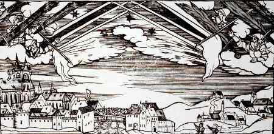

En Angleterre, dont Londres, observation de lances enflamméesProbablement une aurore boréaleR. G., 3 ; Nature, 46, 1870. Citant Lowe. Cf. Jeremiah, 3 ; Nature 46-47, citant Halley < Silverman, Sam: "Auroral Annotations".
À Aschre (état de Thonna) observation de ce qui semble être
une aurore boréaleHellman, 1921, p. 16, 53 < Silverman, Sam: "Auroral Annotations".
En Europe (probablement l'Allemagne), observation de ce qui semble être une aurore boréalePamphlet sur l'événement du 27 août 1581 < Hellman, 1921, p. 82 < Silverman, Sam: "Auroral Annotations".
Sur le lac de Lausanne, Suisse, on voit partir du ciel
comme la grosseur d'une grosse maison, tout ardente en feu, donnant grande clarté sur le lac, de sorte que les
gens nageant sur ledit lac pensent proprement avoir la fin du monde et brûler. Finalement, apres avoir duré
quelque temps, cela se perd et s'éteint en un lieu près du village appellé Villette dans ledit lac "CCCXXIV. Signe apparu sur le lac de Lausanne", Mémoires de Pierrefleur grand banderet d'Orbe (1530-1561), publié par A. Verdeil, Lausanne, 1856, p. 368 < Deliyannis, Y.: "1560, June 12 : Lausanne (Switzerland)", Magonia Exchange, 6 novembre 2007.
Gravure de ce qui semble être une aurore
boréale cette année-là à Bamberg Ein sehr erschröcklich Gesicht und
Wunderzaichen / welches gesehen ist worden zuo Bamberg und Liechtenfelss / Anno M.D.L.X den XXviij. Decembers. Nuremberg (GM-782) / Zürich (PAS II 10:25) < Deliyannis, Y.: Courrier au webmestre, 11 février 2008

À Vienne
observation de ce qui semble être une aurore
boréalePamphlet sur l'événement du 27 août 1581 < Hellman, 1921, p. 16, 53 < Silverman, Sam: "Auroral Annotations".
À Lillebonne à météore flamboyant et une pluie
rouge Natalis Comes < "M. Chladni's New Catalogue of Aerolites", Annals of Philosophy, New Series 12:93, juillet à décembre 1826.
À Eckelsheim (près de Forchheim), à Bamberg,
à Lichtenfels et à Nuremberg, observation de ce qui semble
être une aurore boréalePamphlet sur l'événement du 27 août 1581 < Hellman, 1921, p. 16, 24, 53-54 < Silverman, Sam : "Auroral Annotations".